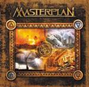

Home Artist links Label link

Masterplan - Masterplan
| Artist: | Masterplan |
| Title: | Masterplan |
| Label: | Painful Lust PL007 |
| Length(s): | 51 minutes |
| Year(s) of release: | 2002 |
| Month of review: | [02/2003] |
Line up
Roland Grapow - guitars
Uli Kunsch - drums
Jorn Lande - vocals
Jan S. Eckert - bass
Axel Mackenrott - keyboards
Tracks
| 1) | Spirit Never Die | 5.26
|
| 2) | Enlighten Me | 4.37
|
| 3) | Kind Hearted Light | 4.25
|
| 4) | Crystal Night | 5.14
|
| 5) | Soulburn | 6.15
|
| 6) | Heroes | 3.31
|
| 7) | Sail On | 4.35
|
| 8) | Into The Light | 4.09
|
| 9) | Crawling From Hell | 4.11
|
| 10) | Bleeding Eyes | 5.39
|
| 11) | When Love Comes Close | 4.08
|
Summary
Masterplan is the joining in a new band by a number of people who made their
marks in rock: Jorn Lande is best known as prog metal Ark's front man. Kusch
and Grapow were with Helloween and Eckert was with Iron Savior.
The music
Masterplan is an album with highly melodic prog metal, a bit more metal than
prog, I would say. Having said that, the speed of this album never lets off,
an effect which was enhanced by the tracks being mixed together on my promo
copy ("for copyright reasons"). The bass and rhythm guitar appear to
constantly, unrelentingly even, drive the music on, as do the haunted
keyboard. Lande's hardrocky voice fits this kind of music well. This
combined with a series of strong compositions, only momentarily taking a
detour towards somewhat to hardrocky stuff (Heroes), results in quite
something.
Conclusion
Masterplan seem to have succeeded in melting together the melodic accessible
sound of Helloween and the quality and captivatingness of Ark. This has
resulted in an album that approaches the quality of an Ark album, yet is
more accessible, and with that very worthwhile. On regular releases the
album will probably be about a minute longer because that will contain a
seperate track for each of the pieces.
© Roberto Lambooy